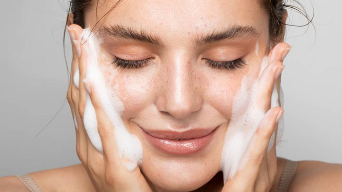

1.El primer paso es una buena limpieza facial, si es por la mañana con un limpiador sera suficiente. Si es por la noche y vas maquillada primero deberas desmaquillarte con un desmaquillante, existen en crema, leche o de base acuosa. Escoge un limpiador y un desmaquillante adecuado para ti en funcion de la textura que te guste y de tu tipo de piel, seca, normal, mixta o grasa.
2.El segundo paso es aplicar con algodon o gasa un tónico astrigente que te ayudará a cerrar
los poros para evitar que entre suciedad. Existen tónicos astrigentes
para cada tipo de piel, escoge el que mejor se adapte a la tuya.
3.Y por último, la crema hidratante, todas las pieles, incluso las grasas necesitan hidratación, si tu piel es grasa busca una crema hidratante en textura gel que sea libre de grasa y si puede ser con pocas siliconas asi no obstruirá tus poros. Si tu piel es seca una crema hidratante algo más nutritiva será ideal y para las pieles normales algo entremedio.